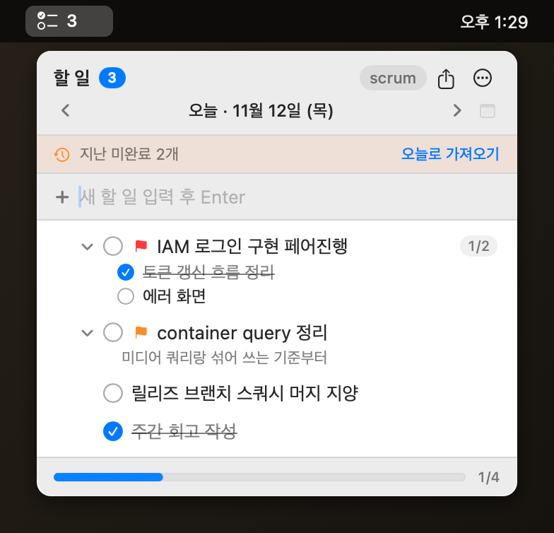
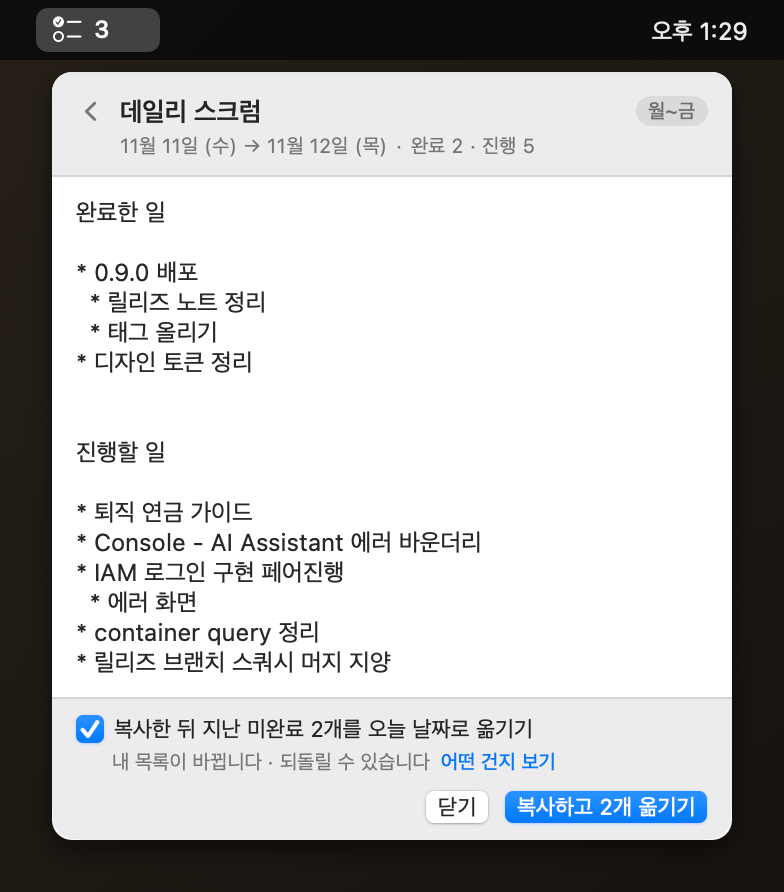

매일 아침 스크럼에 쓸 말을 다시 짜 맞추는 일이 없게 만든 앱이다.
창을 따로 띄우지 않는다. 독에도 자리를 차지하지 않는다. 화면 맨 위 메뉴바에 늘 붙어 있고, 아이콘 옆 숫자로 몇 개 남았는지 누르지 않아도 보인다.
할 일 · 하위 할 일 · 메모. 상위를 체크하면 하위도 따라 체크되고, 하위를 다 끝내면 상위도 저절로 완료된다.
열면 늘 오늘부터다. ⌘[ ⌘] 로 날짜를 넘기고 ⌘T 로 오늘로 돌아온다. 어제 못 끝낸 일은 띠에서 한 번에 끌어온다.
높음 · 보통 · 낮음. 제목 앞 깃발을 눌러 돌려 가며 바꾸고, 그 날짜만 높은 순으로 다시 줄 세울 수 있다.
텍스트나 마크다운으로. 남은 할 일만 골라서, 또는 전체 날짜를 묶어서. 클립보드로 복사하거나 파일로 저장한다.
로그인할 때 저절로 뜬다. 끄고 싶으면 ⋯ 메뉴에서 한 번 끄면 다시 켜지 않는다.
머리말의 scrum 버튼이나 ⌘D. 어제 끝낸 일과 오늘 할 일을 모아 그대로 붙여 넣을 수 있는 글로 만들어 준다.
복사하고 2개 옮기기 처럼 적혀 있어, 누르기 전에 무슨 일이 일어날지 읽힌다. 옮긴 뒤엔 되돌리기 가 뜬다.서명을 받지 않은 앱이라 처음 한 번만 손이 더 간다.
.pkg 를 우클릭 → 열기. 두 번 눌러 열면 macOS 가 막는다. 우클릭으로 열어야 "그래도 열기" 가 나온다./Applications 에 깔린다.~/Library/Application Support/MacTonalDo/todos.json
한 곳에 담기고, 앱은 네트워크를 쓰지 않습니다. 계정도 동기화도 없습니다.